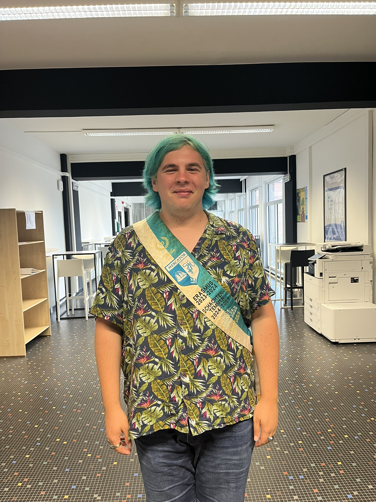
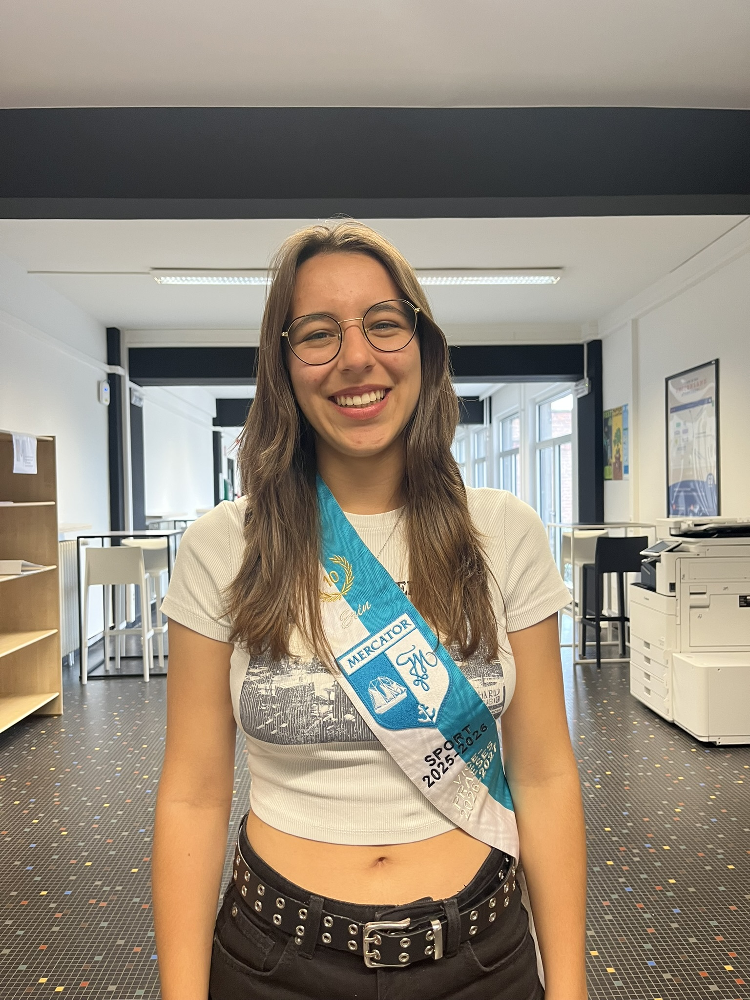
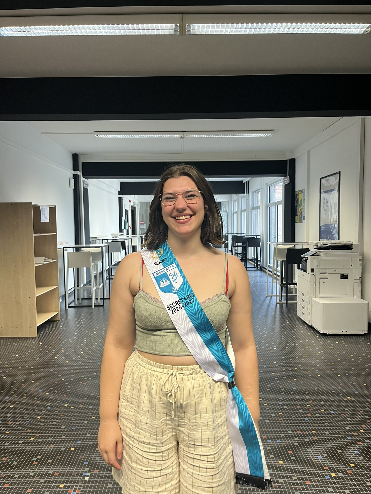
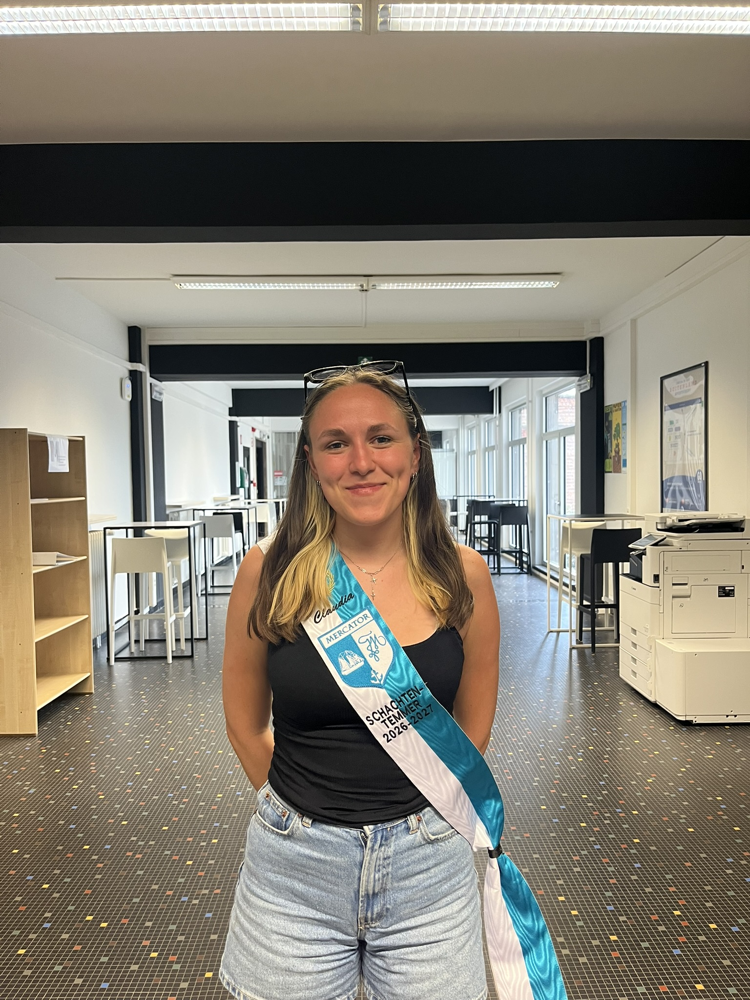
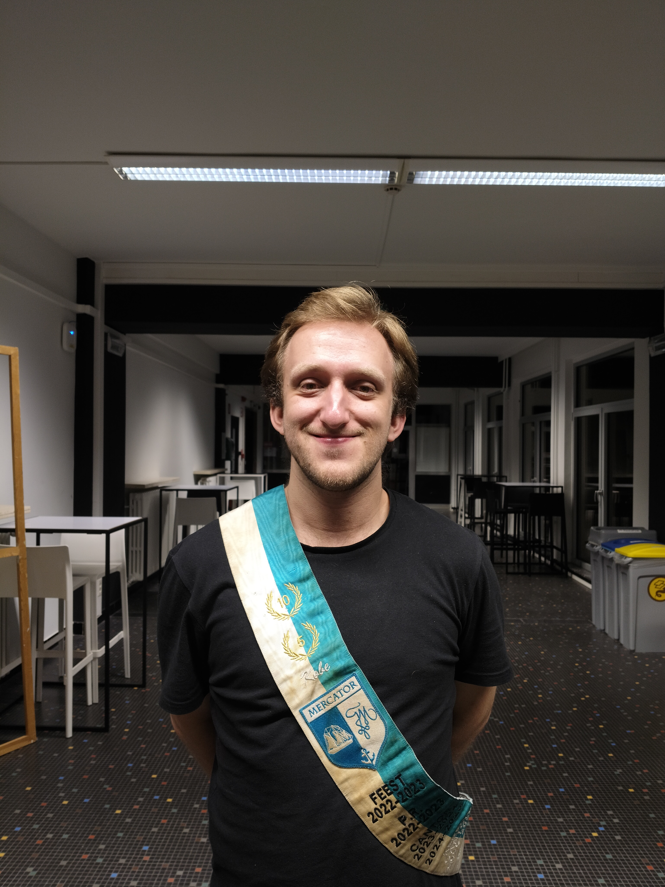
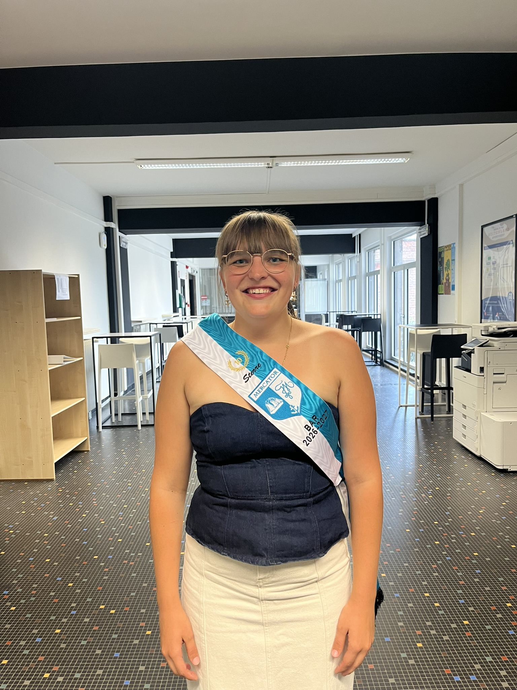
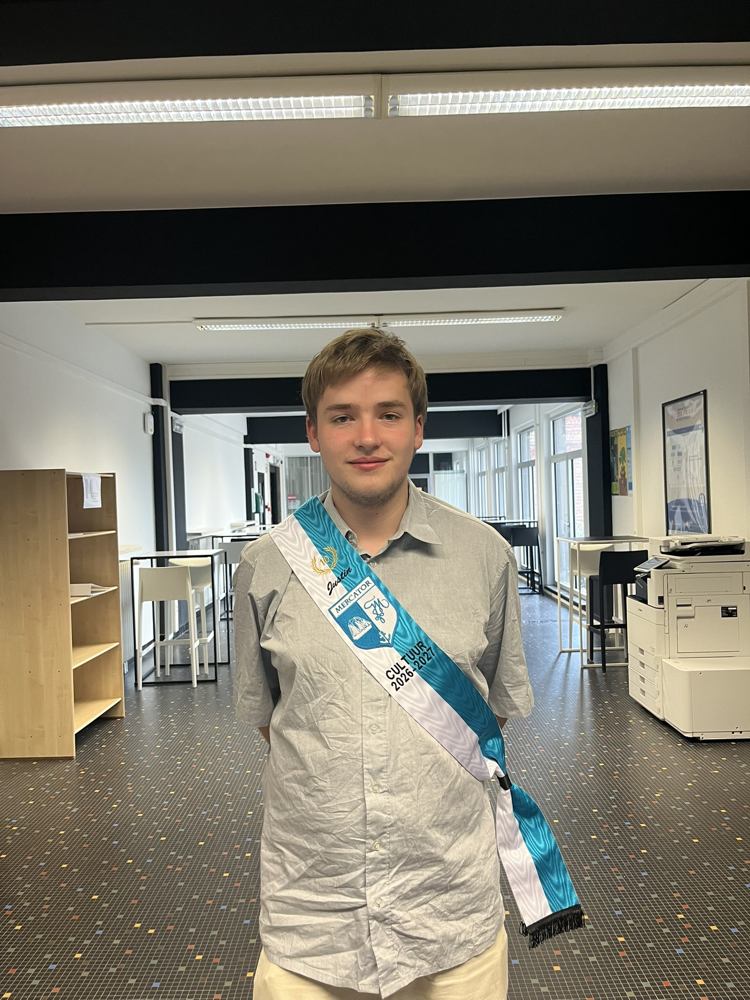
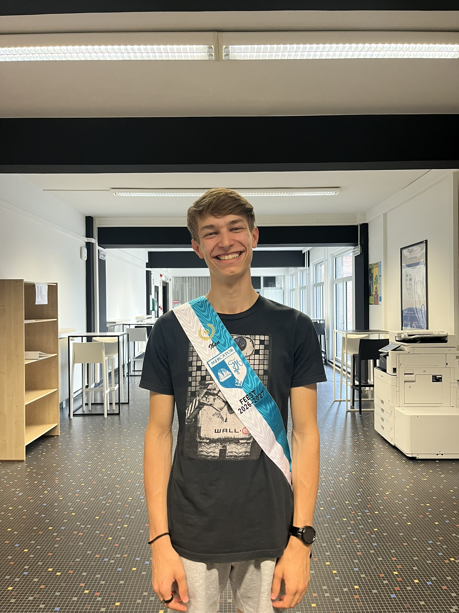
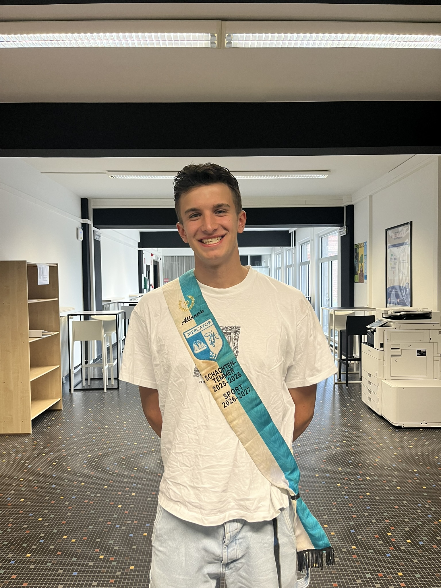
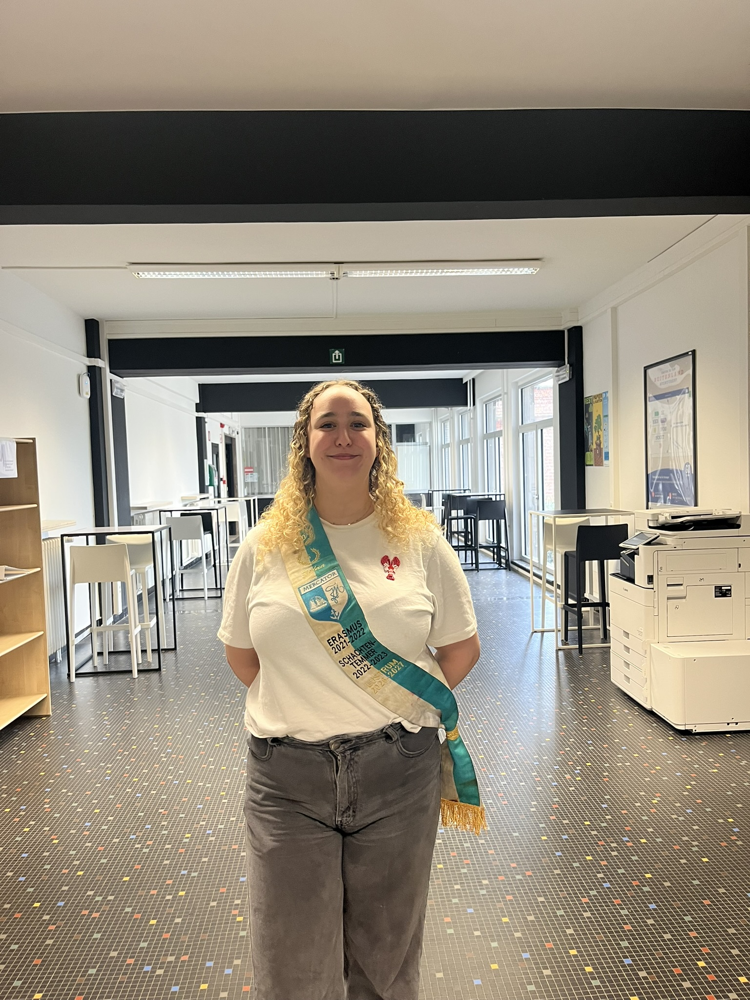

Praesidium 2026-2027
Praeses

Thibo Mertens
Vorige functies: Vice, temmer & erasmus
Wat doe je met je leven? Ik studeer nog en maak van elke dag een feestje
Ik spendeer mijn dagen in: Gent hahaha
Relatiestatus: Single
Evenement waar je het meest naar uitkijkt: Het lustrum ofcourse
Leukste Mercator-herinnering: De Bart peters cantus
Favoriete:
- Cantusliedje: The scotsman
- Frituursnack: Luciferrrr
- Dino: Triceratops
Fun fact: "Ik heb een grote collectie toverstokken xd"
Vice-Praeses

Erin Deceuninck
Vorige functies: Sport
Wat doe je met je leven? Studeren 🥲, industrieel ingenieur bouwkunde aan
UGent
Ik spendeer mijn dagen in: Gent en Oostende
Relatiestatus: Taken door feest
Evenement waar je het meest naar uitkijkt: Onze lustrumweek
Leukste Mercator-herinnering: Acapella deeltje tijdens de Springcantus
Favoriete:
- Cantusliedje: Mercator clublied ofcourse
- Frituursnack: Mozarellasticks
- Dino: Brachiosaurus
Fun fact: "Soms eten varkens elkaars staarten op omdat ze zich vervelen"
Secretaris

Reina Tanghe
Vorige functies: /
Wat doe je met je leven? Aan het proberen om af te studeren als
verpleegkundig
Ik spendeer mijn dagen in: Gent :)
Relatiestatus: Samen met één van de peters
Evenement waar je het meest naar uitkijkt: De lustrumweek & alle nieuwe
mensjes
Leukste Mercator-herinnering: Cantus als Zeden ad interim (was toen nog geen
lid) of mijn doopcantus :)
Favoriete:
- Cantusliedje: Roll me over ;)
- Frituursnack: Bicky Orange en bitterballen
- Dino: Alle Sauropoda en als ik moet kiezen de Diplodocus of de Musango
Fun fact: "Dino's don't rawr & de Dryptosaurus klinkt alsof er iemand zijn opa de slappe lach heeft"
Schachtentemmer

Claudia Chivu
Vorige functies: /
Wat doe je met je leven? Voorbereidingsprogramma klinische psychologie
Ik spendeer mijn dagen in: Gent (beetje overal)
Relatiestatus: De sport aan het temmen
Evenement waar je het meest naar uitkijkt: De doop :)
Leukste Mercator-herinnering: Mid-weekje aan zee
Favoriete:
- Cantusliedje: The Wild Rover
- Frituursnack: Bicky Burger
- Dino: Pterodactyl
Fun fact: "Blijkbaar is een pterodactyl geen echte dino"
Keizer Cantor + 1

Kobe Gregoire
Vorige functies: Feest, PR, cantor
Wat doe je met je leven? Ik werk als bediende verkoper in de Colruyt van
Brakel
Ik spendeer mijn dagen in: Ofwel bij mij thuis in Zarlardinge, ofwel op het kot
van Thibo in Gent
Relatiestatus: Extreem single
Evenement waar je het meest naar uitkijkt: Mijn standaard antwoord zou uiteraard
de cantussen zijn, maar dit jaar kijk ik toch wel het meest uit naar de lustrumweek
Leukste Mercator-herinnering: Mijn verjaardagscantus:)
Favoriete:
- Cantusliedje: Mijn antwoord hierop verandert om de paar dagen, maar momenteel is het Ik drink op p.115
- Frituursnack: Een SOA-burger van de Gouden Saté
- Dino: Een diplodocus
Fun fact: "Ik speel met mijn fanfare ieder jaar mee met de intrede van de Sint in Antwerpen"
Bar

Sterre Van Straeten Delahaut
Vorige functies: Vaste medewerker
Wat doe je met je leven? Ik studeer verpleegkunde
Ik spendeer mijn dagen in: Gent in de week en Temse in het weekend
Relatiestatus: Single
Evenement waar je het meest naar uitkijkt: Lustrumweek
Leukste Mercator-herinnering: Mijn doop
Favoriete:
- Cantusliedje: Het Mercator clublied natuurlijk
- Frituursnack: Mexicano, viandel of kaaskroket
- Dino: Velociraptor
Fun fact: "/"
Cultuur

Justin Toye
Vorige functies: /
Wat doe je met je leven? Maatschappelijk werk
Ik spendeer mijn dagen in: Mijn boeken en de overpoort
Relatiestatus: Single as a pringle
Evenement waar je het meest naar uitkijkt: De lustrum activiteiten!
Leukste Mercator-herinnering: doop en 1ste cantus (ik kan nie kiezen)
Favoriete:
- Cantusliedje: De blauwvoet
- Frituursnack: Bamischijf
- Dino: pterodactylus (die da kan vliegen)
Fun fact: "Een wolk van gemiddelde grootte weegt ongeveer een miljoen ton"
Feest

Iben Verhaeghe
Vorige functies: /
Wat doe je met je leven? Te veel studeren... (industrieel ingenieur
Elektronica-ICT)
Ik spendeer mijn dagen in: Gent, meestal. Anders in Menen
Relatiestatus: Taken by Vice
Evenement waar je het meest naar uitkijkt: Lustrumweek
Leukste Mercator-herinnering: Boogschieten int citadel
Favoriete:
- Cantusliedje: It's a long way to Tipperary
- Frituursnack: Grilled cheese puckies
- Dino: Triceratops
Fun fact: "Konijnen eten eigenlijk helemaal nie zo extreem graag wortelen, dus da is nie de reden da ze geen bril dragen."
Sport

Allancio Versluys
Vorige functies: temmer
Wat doe je met je leven? Hopelijk beginnen aan de politieopleiding
Ik spendeer mijn dagen in: De bowl
Relatiestatus: Aan het sporten met de temmer
Evenement waar je het meest naar uitkijkt: Cantussen
Leukste Mercator-herinnering: Doop van mijn schachten
Favoriete:
- Cantusliedje: Anne Marieke
- Frituursnack: Mini loempia’s
- Dino: Erectsaurus
Fun fact: "Ik ben de king of the bowl"
Lustrum

Zahra Regeer
Vorige functies: temmer
Wat doe je met je leven? /
Ik spendeer mijn dagen in: Overal
Relatiestatus: Non existent
Evenement waar je het meest naar uitkijkt: Lustrum natuurlijk
Leukste Mercator-herinnering: Doop van mijn schachtjes
Favoriete:
- Cantusliedje: Roll me over
- Frituursnack: KAASKROKET
- Dino: rawr geen idee eentje me een lange nek
Fun fact: "/"
Peters

Andreas Moerman
Vorige functies: keizer feest
Wat doe je met je leven? Zelfstandig
Ik spendeer mijn dagen in: De st hubert
Relatiestatus: Bezet
Evenement waar je het meest naar uitkijkt: Eerste cantus
Leukste Mercator-herinnering: Lustrum
Favoriete:
- Cantusliedje: Allouette
- Frituursnack: Spicy viandel
- Dino: Stegosaurus
Fun fact: "Ik ben een boer"

Matthias Rateau
Vorige functies: senior, vice, cultuur
Wat doe je met je leven? Aanwezig op 4 verschillende studentenjobs, maar ook
druk bezet met de richting Marketingsupport
Ik spendeer mijn dagen in: Gent
Relatiestatus: Er is wel iemand leuk aanwezig! 👀
Evenement waar je het meest naar uitkijkt: Lustrumweek!
Leukste Mercator-herinnering: Maren die op de vorige lustrumcantus mijn
“Throw-up” heeft moeten kuisen…
Favoriete:
- Cantusliedje: Lichtjes van de Schelde
- Frituursnack: Bicky Burger, Boulet en Bitterballen
- Dino: Dildosaurus
Fun fact: "Een vis kan zich gemiddeld 9 seconden focussen op iets, een mens maar 8 seconden (Tenzij in de blok, dan is het na 1 seconde al zoek hier…)"